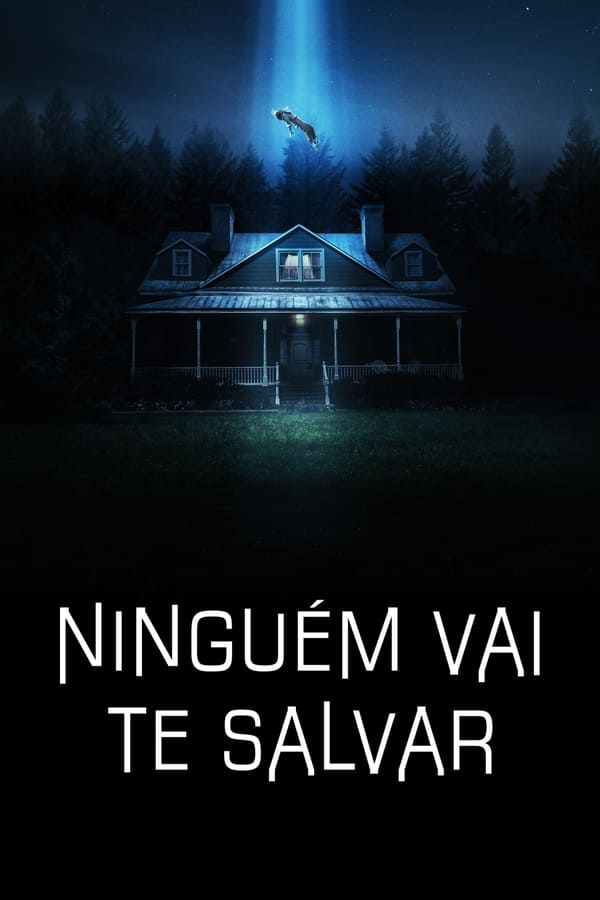
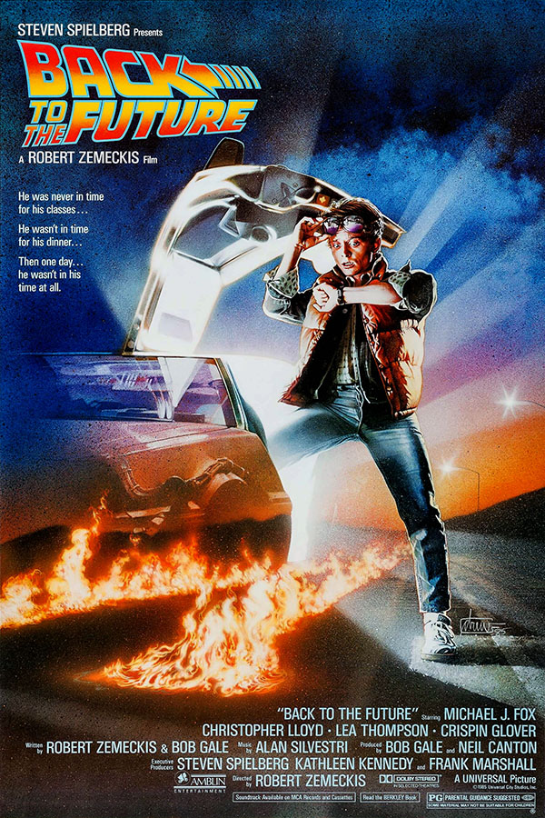

- Interestelar
- A Chegada Sinopse
- Ninguém Vai Te Salvar  Sinopse
- Alien, o 8.º Passageiro
- De Volta para o Futuro  Sinopse
 Sinopse
Sinopse
As reservas naturais da Terra estão chegando ao fim e um grupo de astronautas recebe a missão de verificar possíveis planetas para receberem a população mundial, possibilitando a continuação da espécie. Cooper é chamado para liderar o grupo e aceita a missão sabendo que pode nunca mais ver os filhos. Ao lado de Brand, Jenkins e Doyle, ele seguirá em busca de um novo lar.
Prime video MAXNaves alienígenas chegaram às principais cidades do mundo. Com a intenção de se comunicar com os visitantes, uma linguista e um militar são chamados para decifrar as estranhas mensagens dos visitantes.
Prime videoBrynn encontra consolo dentro da casa onde cresceu, até que uma noite é acordada por ruídos estranhos de intrusos sobrenaturais.
Disney+ Sinopse
Sinopse
Uma nave espacial, ao retornar para Terra, recebe estranhos sinais vindos de um asteroide. Enquanto a equipe investiga o local, um dos tripulantes é atacado por um misterioso ser. O que parecia ser um ataque isolado se transforma em um terror constante, pois o tripulante atacado levou para dentro da nave o embrião de um alienígena, que não para de crescer e tem como meta matar toda a tripulação.
Disney+O adolescente Marty McFly é transportado para 1955 quando uma experiência do excêntrico cientista Doc Brown dá errado. Ele viaja pelo tempo em um carro modificado e acaba conhecendo seus pais ainda jovens. O problema é que Marty pode deixar de existir porque ele interferiu na rotina dos pais, que correm o risco de não se apaixonar mais. Para complicar ainda mais a situação, Marty precisa voltar para casa a tempo de salvar o cientista.
Prime video Telecine